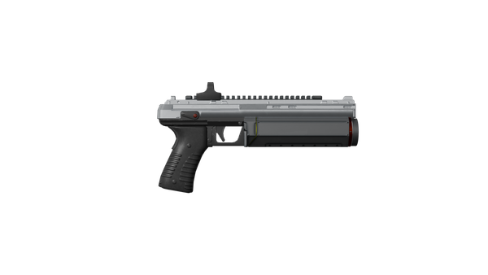
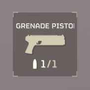
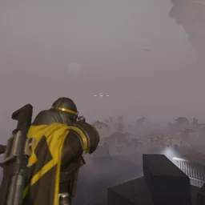
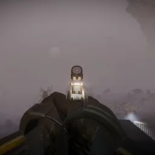

GP-31 榴弹手枪
最后更新: 1.006.001
当前补丁: 1.007.001
当前补丁: 1.007.001
GP-31 Grenade Pistol

弹药
容量
1
Spare Rounds
6
Supply Box Refill
4
弹药箱 Refill
2
操控性
人体工学
95
后坐力
43
“发射榴弹的手枪，每射击一发子弹后必须重新装弹。
— 军械库 描述
the GP-31 榴弹手枪 is a Secondary 特殊 single-shot weapon that fires a powerful grenades at a 中距离.
获取途径
It is unlocked on the Page 3 of 民主爆破 尊享战争债券 for  60 Medals.
60 Medals.
- The 榴弹手枪 is a very useful 功能型 副武器, as it can inflict 爆炸伤害.
- In particular, when used properly it is capable of destroying 终结族 Nests and 机器人 Fabricators, allowing the wielder to equip a different 类型 of 手榴弹 such as G-23 Stun while retaining the 能力 to 摧毁 enemy spawners.
- The 爆炸 and 溅射 nature of the grenades allows the 榴弹手枪 to dispatch 多个 敌人 with a 单发, or inflict significant Structural 伤害 to large body parts such as the thorax of Bile 喷吐者.
- Because of its significant falling 弧度, it can be very 困难 to land precise shots at long distances since 重力 must be accounted for. Be sure to practice in order to get used to the 弧度.
- Be wary when using this weapon, as it is very 容易 to exhaust its 弹药 supply. When picking up supplies from a 重新补给 or B-1 补给背包 four grenades will be replenished, and when picking up an 弹药箱 two grenades will be replenished; 手榴弹 Cases do not replenish the 榴弹手枪. Be sure to 平衡 手榴弹 consumption with that of the primary and 支援武器.
- Be careful when firing the 榴弹手枪 at very 近距离, as the fuse has a 射程 safety that prevents it from detonating too close to the wielder. If the 手榴弹 hits an enemy at point-blank 射程, it will simply bounce off and ricochet, exploding far from its intended 目标.
- The One Handed trait means that the 榴弹手枪 can be used while holding items like the SSSD 硬盘 or while wielding the 防弹盾牌, and it will be automatically equipped in these cases if no other 武器 with One Handed are equipped.
- The 榴弹手枪 makes no noise when fired, allowing it to 摧毁 终结族 Nests and 机器人 Fabricators without alerting nearby 敌人. The 爆炸 can also be used to distract enemy patrols.
媒体

武器轮盘
瞄准，第三人称
瞄准，第一人称- 换弹，第三人称
- 换弹，第一人称
琐事
- the GP-31 榴弹手枪 is suggested by an R&D intern who was executed for making an unauthorised suggestion to a 优越 and posthumously promoted to 中士.[1]
变更历史
补丁
描述
1.006.001
2026-02-03
Change
- 已减少 晃动修正 from 1.2 to 1
1.003.000
2025-05-13
Change
- 晃动从1提升至1.2
1.001.002
2024-08-06
Changes
- 已减少 弹药 容量 from 8 to 6.
- 已增加 the number of rounds replenished from an 弹药箱 from 2 to 4.
- Moved into a 特殊 副武器 类别.
1.000.300
2024-04-29
Fix
- 爆炸武器不再将玩家向爆炸中心拉扯。
1.000.202
2024-04-11
(Mid-补丁)
Addition
- Added to the game.
参考